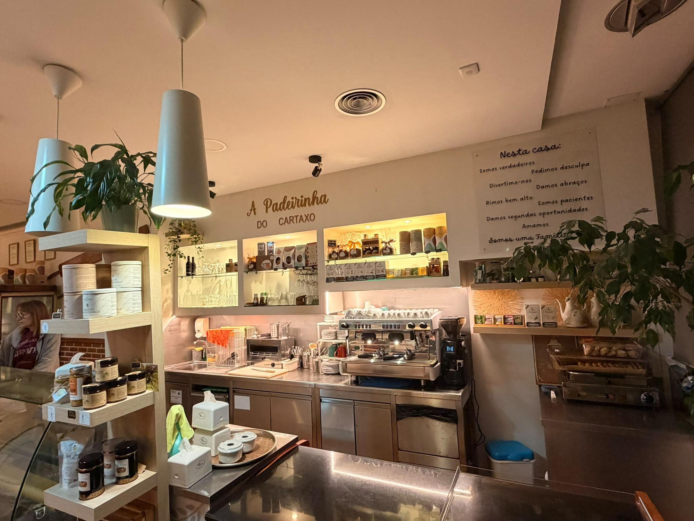
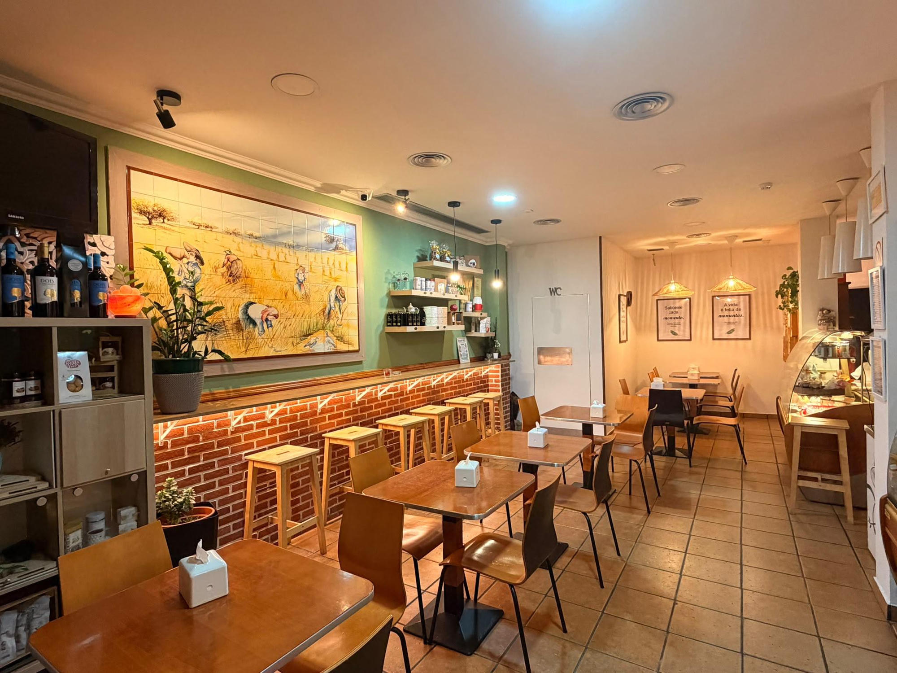
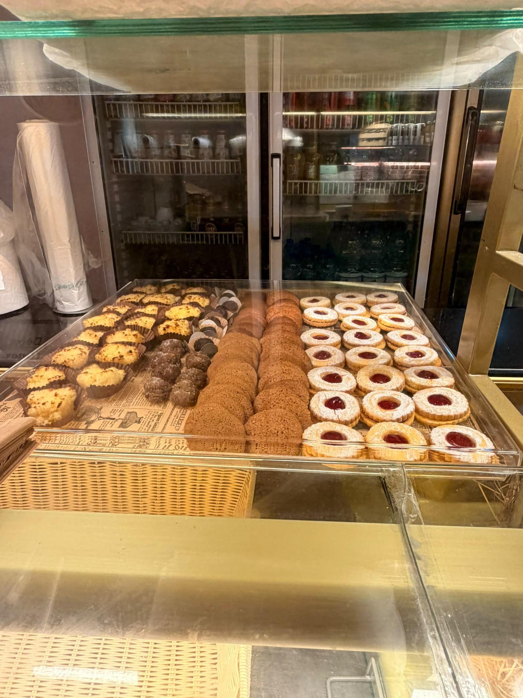
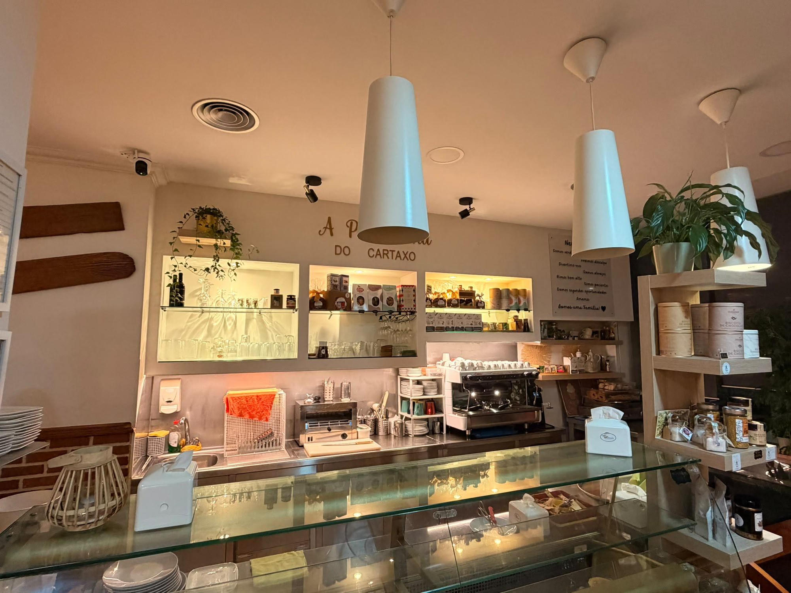
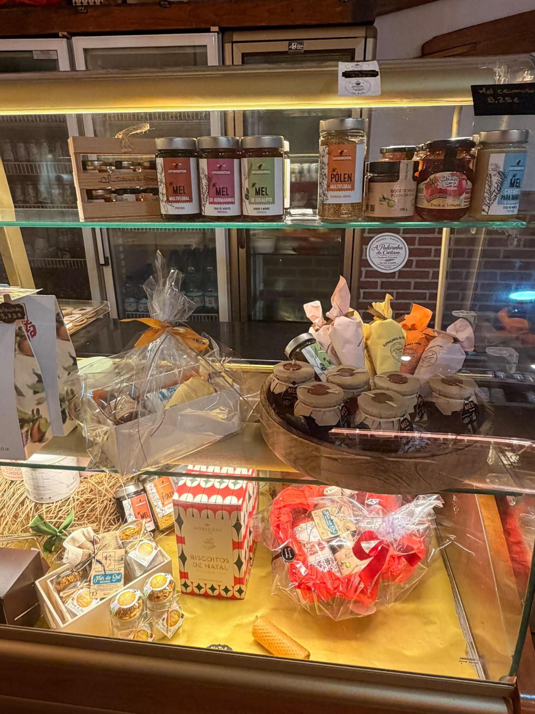

Na Padeirinha somos recebidos com um sorriso e uma palavra para cada um. Aqui encontra pratos do dia como os da casa da avó, doces e sobremesas feitos com carinho, limonada caseira e um chazinho quente.
E se o prato do dia já acabou… faz-se outra coisa, num instante. Ninguém fica com fome.

Pequeno-almoço, brunch e almoço, para saborear na sala, na esplanada ou levar consigo.

Bolachas, queijadas, coquinhos e sobremesas feitas todos os dias.

Café fresco, chás selecionados e limonada caseira.

Mel, doces, flor de sal e caixinhas de oferta, ideais para o Natal.
“Nesta casa somos verdadeiros, damos abraços, rimos bem alto. Somos uma família.”A Padeirinha do Cartaxo
Rua Doutor Manuel Gomes da Silva 28
2070-096 Cartaxo
960 184 446